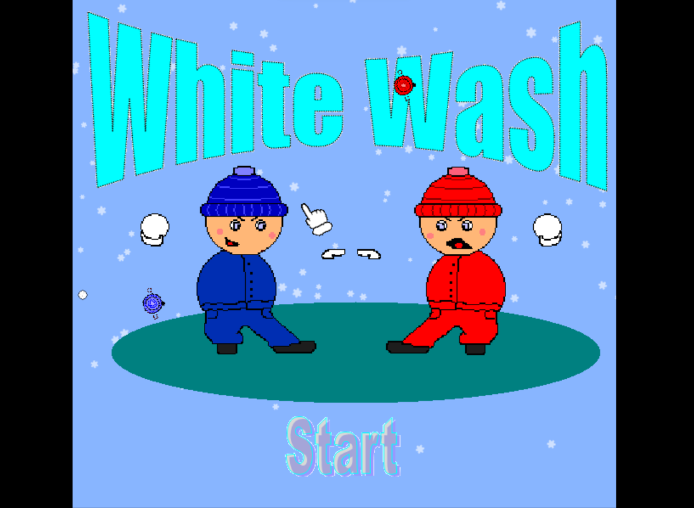

White wash was a game idea I came up with while studying at Devri University
for game development and design. It is a snowball fighting game that uses powerups, multiplayer
and features a pretty basic ai enemy. Unfortunately the powerups and larger 4 team level is
only accessible through the multiplayer function which might not work as this is over 10 years
old now, but it worked at the time and inspired my two teammates who worked on it to continue
with it after I had left to serve a 2 year mission. The game was developed in Game maker and I have
provided a download link to an executable of the game.
download link
 Other games and projects I have worked on worked on where mostly in c++ and a little
python and where part of learning those languages. Those projects included making the asteroids
game, skeet shooting game, Sudoku game that also had a self solving algorithm. Unfortunately I do
not have executables of those games to download.
Other games and projects I have worked on worked on where mostly in c++ and a little
python and where part of learning those languages. Those projects included making the asteroids
game, skeet shooting game, Sudoku game that also had a self solving algorithm. Unfortunately I do
not have executables of those games to download.